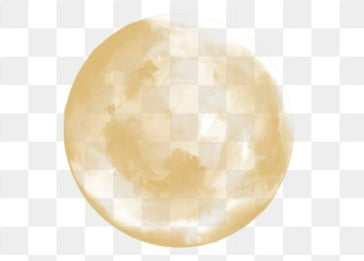

What mode will you choose? Day or night?
Now the site is in Night Mode, it should make the site in diffrent look by changing few of it's elements.
If the clock shows after 9.00 PM and using this mode it's good, but when it's sunny using day mode would be way better :)
